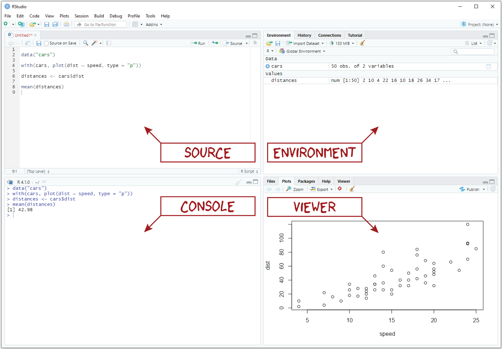
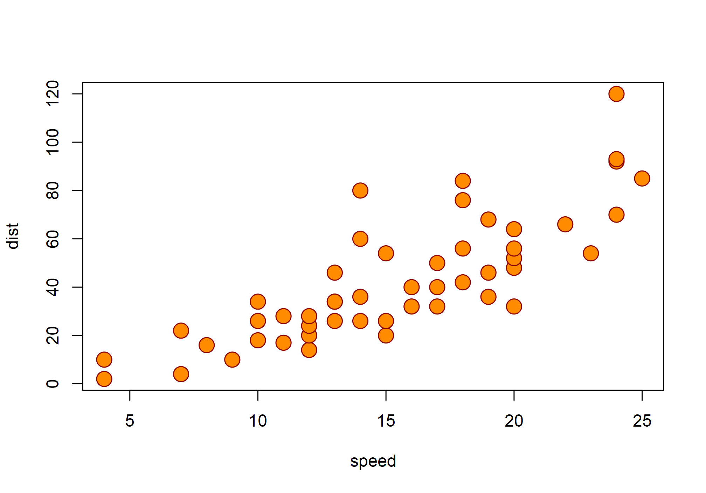
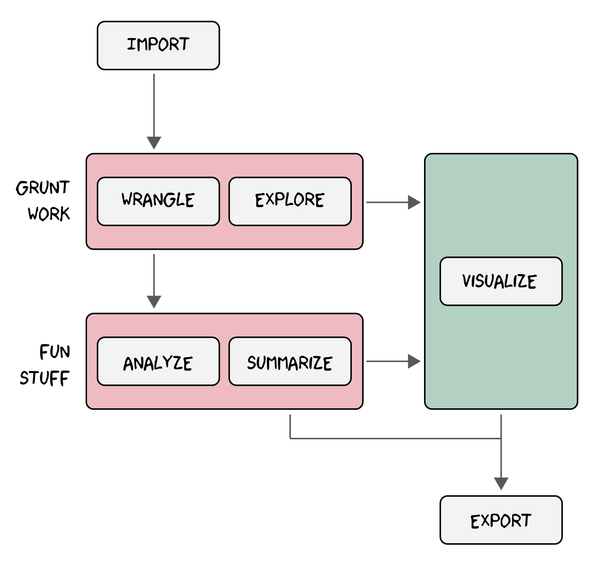
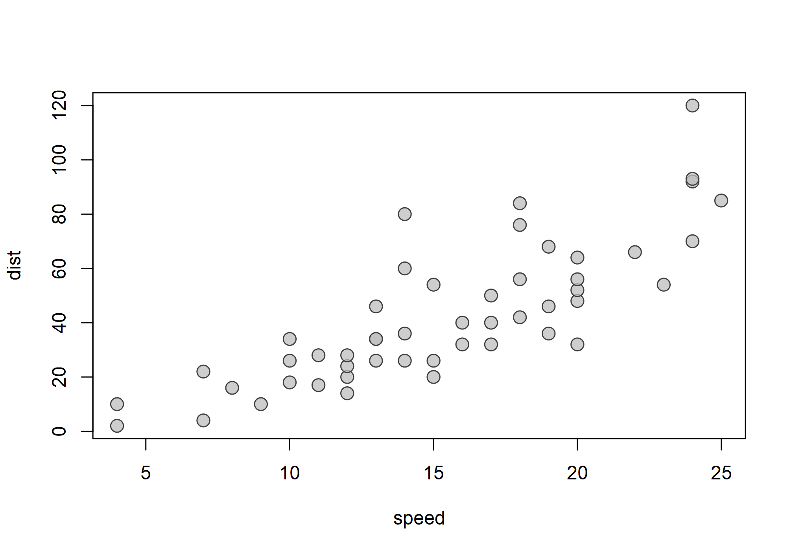
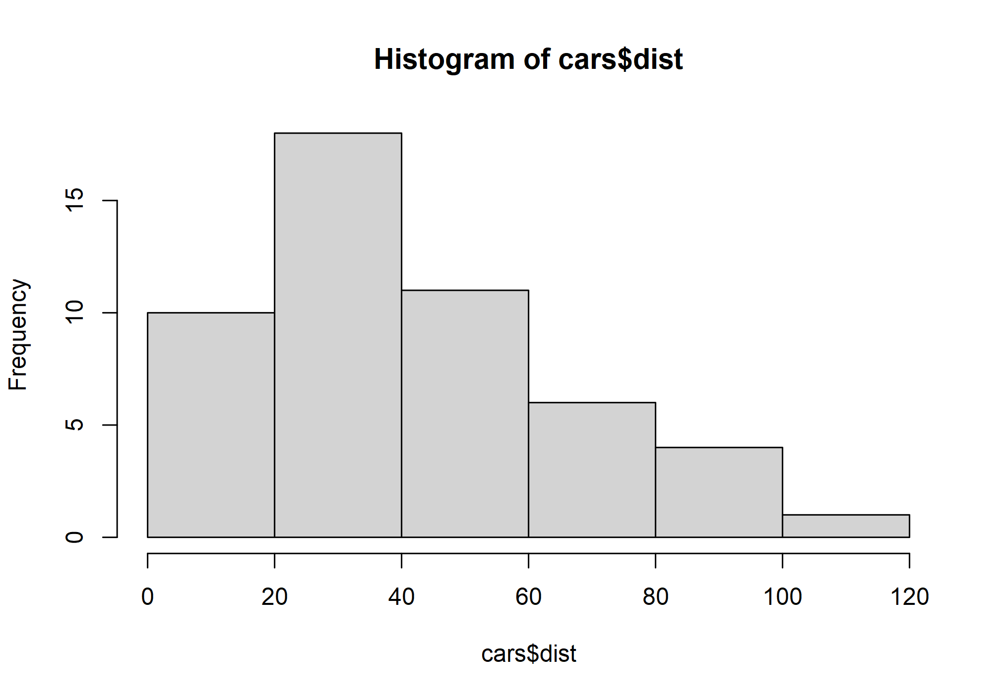
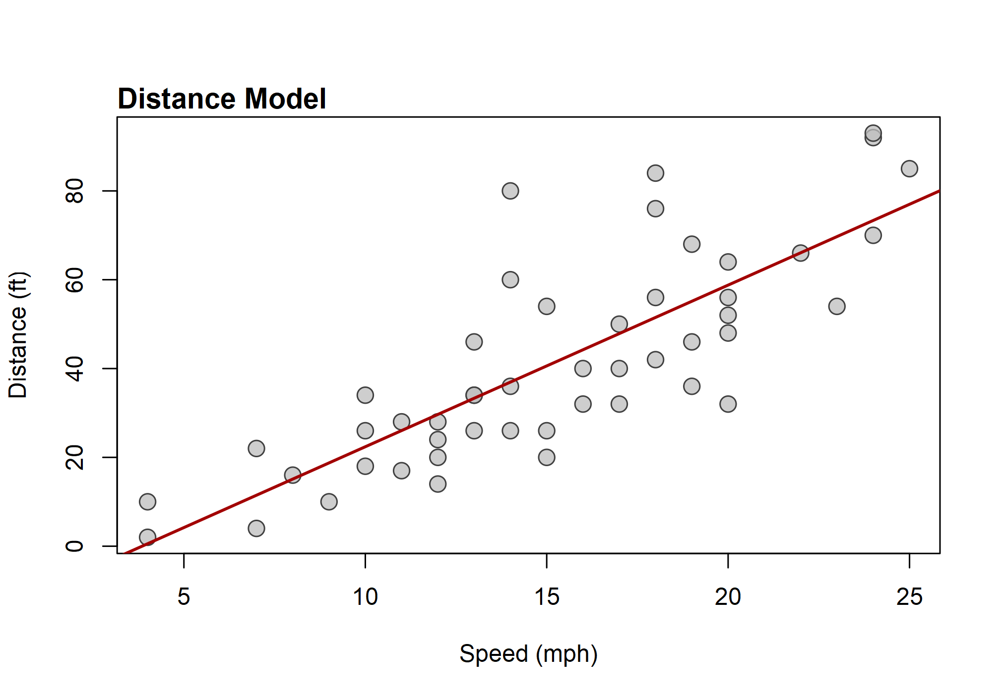

Lab 01
Introduction to R
Outline
tl;dr An introduction to R and R Markdown.
Objectives
This lab will guide you through the process of
- making sense of RStudio
- making your first plot in R
- learning the basics of R
- doing math
- creating objects
- using functions
- working through a typical workflow
- creating an R Project folder
- putting together an Rmarkdown document
- adding R code
- styling with markdown
- knitting
R Packages
No additional packages are required for this lab.
Data
The cars dataset from the base R datasets package.
For more information, see here: https://stat.ethz.ch/R-manual/R-devel/library/datasets/html/cars.html
RStudio

If you are going to do anything with R, RStudio is hands-down the best place to do it. RStudio is an open-source integrated development environment (or IDE) that makes programming in R simpler, more efficient, and most importantly, more reproducible. Some of its more user-friendly features are syntax highlighting (it displays code in different colors depending on what it is or does, which makes it easier for you to navigate the code that you’ve written), code completion (it will try to guess what code you are attempting to write and write it for you), and keyboard shortcuts for the more repetitive tasks.
Pane layout
When you first open RStudio, you should see three window panes: the Console, the Environment, and the Viewer. If you open an R script, a fourth Source pane will also open. The default layout of these panes is shown in the figure above.
- Source. The Source pane provides basic text editing functionality, allowing you to create and edit R scripts. Importantly, you cannot execute the code in these scripts directly, but you can save the scripts that you write as simple text files. A dead give away that you have an R script living on your computer is the .R extension, for example, my_script.R.
- Console. The Console pane, as its name suggests, provides an interface to the R console, which is where your code actually gets run. While you can type R code directly into the console, you can’t save the R code you write there into an R script like you can with the Source editor. That means you should reserve the console for non-essential tasks, meaning tasks that are not required to replicate your results.
- Environment. The Environment pane is sort of like a census of your digital zoo, providing a list of its denizens, i.e., the objects that you have created during your session. This pane also has the History tab, which shows the R code you have sent to the console in the order that you sent it.
- Viewer. The Viewer pane is a bit of a catch-all, including a Files tab, a Plots tab, a Help tab, and a Viewer tab.
- The Files tab works like a file explorer. You can use it to navigate through folders and directories. By default, it is set to your working directory.
- The Plots tab displays any figures you make with R.
- The Help tab is where you can go to find helpful R documentation, including function pages and vignettes.
- The actual Viewer tab provides a window to visualize R Markdown.
Let’s try out a few bits of code just to give you a sense of the difference between Source and Console.
As you work through this lab, you can practice running code in the Console, but make sure to do the actual exercises in an R script.
Exercises
- First, let’s open a new R script. To open an R script in RStudio, just click File > New File > R Script (or hit
Ctrl + Shift + N,Cmd + Shift + Non Mac OS). - Copy this code into the console and hit Enter.
rep("Boba Fett", 5)- Now, copy that code into the R script you just opened and hit Enter again. As you see, the code does not run. Instead, the cursor moves down to the next line. To actually run the code, put the cursor back on the line with the code, and hit
Ctrl + Enter(CMD + Enteron Mac OS).
Plot
To ease you into working with R, let’s visualize some data to answer a simple question: Do fast moving objects take longer to slow down than slow moving objects? Don’t worry about understanding all of this! It’s just to give you a feel for the sort of graphics you can make with R. We’ll actually spend all of the next lab learning how to make even better graphics.
The data
To answer that question, we’ll use the cars data.frame that comes pre-loaded with R. A data.frame is simply an R object that stores tabular data, with rows for each observation and columns for each variable. Let’s have a look at the first n rows of this table, specifically the first 5 rows. We can do this using the function head().
head(cars, n = 5)
## speed dist
## 1 4 2
## 2 4 10
## 3 7 4
## 4 7 22
## 5 8 16Note that, in this case, each row represents a car. The first column, or variable, records the speed (in miles per hour) each car was traveling when it applied its brakes, and the second column provides measures of the distances (in feet) that each took to stop.
The plot() function
The base R graphics package provides a generic function for plotting, which - as you might have guessed - is called plot(). To see how it works, try running this code:
plot(cars)
Customizing your plot
With the plot() function, you can do a lot of customization to the resulting graphic. For instance, you can modify all of the following:
pchwill change the point type,mainwill change the main plot title,xlabandylabwill change the x and y axis labels,cexwill change the size of shapes within the plot region,pchwill change the type of point used (you can use triangles, squares, or diamonds, among others),colchanges the color of the point (or its border), andbgchanges the color of the point fill (depending on the type of point it is)
For instance, try running this code:
plot(
cars,
pch = 21,
bg = "darkorange",
col = "darkred",
cex = 2
)
Exercises
- Complete the following line of code to preview only the first three rows of the
carstable.
head(cars, n = )- Modify the code below to change the size (
cex) of the points from 2 to 1.5.
plot(
cars,
pch = 21,
bg = "darkorange",
col = "darkred",
cex = 2
)What does this plot tell us about the relationship between car speed and stopping distance? Is it positive or negative? Or is there no relationship at all? If there is a relationship, what might explain it?
Complete the code below to add “Stopping distance for cars” as the
maintitle.
plot(
cars,
pch = 21,
bg = "darkorange",
col = "darkred",
cex = 1,
main =
)- Complete the code below to add “Speed (mph)” as the x-axis label and “Distance (ft)” as the y-axis label.
plot(
cars,
pch = 21,
bg = "darkorange",
col = "darkred",
cex = 2,
main = "Stopping distance for cars",
xlab = ,
ylab =
)R Basics

R is a calculator
You can just do math with it:
300 * (2/25)
## [1] 24
3^2 + 42
## [1] 51
sin(17)
## [1] -0.9613975Objects and Functions
But, R is more than just a calculator. With it, you can make things and you can do things. The things that you make are called objects and the things that you do things with are called functions. Any complex statistical operation you want to conduct in R will almost certainly involve the use of one or more functions.
Calling functions
To use a function, we call it like this:
function_name(arg1 = value1, arg2 = value2, ...)Try calling the seq() function.
seq(from = 1, to = 5)
## [1] 1 2 3 4 5As you can see, this generates a sequence of numbers starting at 1 and ending at 5. There are two things to note about this. First, we do not have to specify the arguments explicitly, but they must be in the correct order:
seq(1, 5)
## [1] 1 2 3 4 5
seq(5, 1)
## [1] 5 4 3 2 1Second, the seq() function has additional arguments you can specify, like by and length. We did not have to specify these because they have default values, in this case, by = 1, which entails the length. You can change one or the other of these (but not both):
seq(1, 5, by = 2)
## [1] 1 3 5
seq(1, 5, length = 10)
## [1] 1.000000 1.444444 1.888889 2.333333 2.777778 3.222222 3.666667 4.111111
## [9] 4.555556 5.000000Creating objects
To make an object in R, you use the arrow, <-, like so:
object_name <- valueTry creating an object with value 5.137 and assigning it to the name bob, like this:
bob <- 5.137There are three things to note here. First, names in R must start with a letter and can only contain letters, numbers, underscores, and periods.
# Good
winter_solder <- "Buckey"
object4 <- 23.2
# Bad
winter soldier <- "Buckey" # spaces not allowed
4object <- 23.2 # cannot start with a numberSecond, when you create an object with <-, it ends up in your workspace or environment (you can see it in the RStudio environment pane). Finally, it is worth noting that the advantage of creating objects is that we can take the output of one function and pass it to another.
x <- seq(1, 5, length = 3)
logx <- log(x)
exp(logx)
## [1] 1 3 5Exercises
Use
seq()to generate a sequence of numbers from 3 to 12.Use
seq()to generate a sequence of numbers from 3 to 12 with length 25.Why doesn’t this code work?
seq(1, 5, by = 2, length = 10)Use
<-to create an object with value 25 and assign it to a name of your choice.Now try to create another object with a different value and name.
What is wrong with this code?
2bob <- 10Workflow

As you work more and more in R, you will learn that statistical analyses tend to involve the same basic set of tasks:
- importing data,
- wrangling data to get it into a format necessary for analysis,
- exploring data with some simple descriptive statistics,
- analyzing data with models to investigate potential trends or relationships, and
- summarizing the results.
At various stages, you will also spend considerable time
- visualizing the data and the results, either to explore the data further or to help communicate the results to others.
A lot of the output of this process, we will also want to save for later, perhaps to include in a publication (like a figure or model summary), but maybe also to avoid repetition of difficult and time-consuming tasks, so the workflow will also involve
- exporting refined data and models.
To make this more concrete, let’s try out an example, working with the cars data again. As we go through this, try running all the code in the console.
An Example
Suppose we return to the question we asked in the plotting section: Does the speed a car is going when it applies its brakes determine the distance it takes the car to stop? Obviously, the answer is Yes, but let’s pretend we don’t know the answer, so we can walk through the process of answering the question anyway.
Import
First, we need some data. In this case, we do not actually need to import the cars dataset because it is already available to us in R, so let’s just pretend like we did.
Explore
Now, let’s explore the data. Always, always, always, the best way to explore data is to visualize data! We already did this once, but it can’t hurt to try it again!
plot(
cars,
pch = 21,
bg = adjustcolor("gray", 0.75),
col = "gray25",
cex = 1.5
)
Then, we can do things like calculate the mean stopping distance.
mean(cars$dist)
## [1] 42.98Note that we use the $ operator to pull the distance (dist) values from the cars table and supply it to the mean() function. Don’t worry too much about wrapping your head around that idea as we will talk about it more in another lab. We can also make a histogram to explore the distribution of stopping distances:
hist(cars$dist)
What does this tell you about car stopping distances? Is it clustered? Random?
Wrangle
Maybe we think that one really long distance is exceptional, perhaps owing to measurement error, and we want to remove it from our analysis. In that case, we want to subset the data, including only distance values less than some amount, say 100 ft.
cars <- subset(cars, dist < 100)This is data wrangling, preparing the data for analysis.
Analyze
Now, finally, we might want to answer our question directly by modeling the relationship between car speeds and stopping distances. Here, our hypothesis is that there is no relationship. This is called the null hypothesis. If we can show that this hypothesis is very likely false, then we can with some confidence accept the alternative hypothesis, namely, that there is a relationship. To test the null hypothesis, we can construct a simple linear model. In R, we do this:
distance_model <- lm(dist ~ speed, data = cars)
summary(distance_model)
##
## Call:
## lm(formula = dist ~ speed, data = cars)
##
## Residuals:
## Min 1Q Median 3Q Max
## -26.789 -9.149 -1.672 8.013 43.048
##
## Coefficients:
## Estimate Std. Error t value Pr(>|t|)
## (Intercept) -14.0021 6.2951 -2.224 0.031 *
## speed 3.6396 0.3918 9.290 3.26e-12 ***
## ---
## Signif. codes: 0 '***' 0.001 '**' 0.01 '*' 0.05 '.' 0.1 ' ' 1
##
## Residual standard error: 14.1 on 47 degrees of freedom
## Multiple R-squared: 0.6474, Adjusted R-squared: 0.6399
## F-statistic: 86.31 on 1 and 47 DF, p-value: 3.262e-12Woah! That’s a lot to digest. For now, just note that the asterisks (*) imply that that there is very likely a relationship between speed and distance. But, what is that relationship? Or, what does it look like? Well, let’s try to visualize that in R, too.
plot(
cars,
pch = 21,
bg = adjustcolor("gray", 0.75),
col = "gray25",
cex = 1.5,
xlab = "Speed (mph)",
ylab = "Distance (ft)"
)
abline(
distance_model,
col = "#A20000",
lwd = 2
)
title(
"Distance Model",
line = 0.3,
adj = 0,
cex = 1.5
)
Export
Now, if we feel it necessary, we can save our model, so we can inspect it again later.
save(distance_model, file = "distance_model.Rds")And that’s it! Now, all we have to do is write this up and publish it! Easy peasy.
R Projects

YOU CANNOT EAT R CODE. Believe me. You can’t. Eventually, you’ll have to close out of R, turn off your computer, walk away, and do whatever it is that you do to maintain your existence. That means, you need some way to save your progress and you need some place to save it. R has a few built-in tools for this, and they are really convenient, at least early on. However, you will be much better off if you get into the habit of using RStudio Projects. What is an R Project? Basically, it’s a folder on your computer that you can use to organize all the data, code, figures, texts, and analyses associated with a single scientific research project.
When you open your project in RStudio, it will establish your project folder as your working directory by default. The advantage of this is that you can access R scripts and data using relative file paths, rather than specifying the full path from your computer’s root directory. Why is this advantageous? Because you can copy the project folder to any computer you want and your relative file paths will just work!
Exercises
- Before we setup your project, let’s turn off some of R’s default settings.
- In RStudio, go to Tools > Global Options….
- In the dialog box that appears, navigate to the General section, and under Workspace, make sure “Restore .RData into workspace at startup” is unchecked.
- Then, for “Save workspace to .Rdata on exit”, select Never.
- Hit “Apply”, then hit “OK.”
- Now, we are going to create a new project for you for this class. You will use this folder to save all your lab and homework exercises, required datasets, and figures. To do that, follow these steps:
- In RStudio, go to File > New Project….
- In the dialog box that appears, select New Directory, then New Project.
- Put “qaad” as the Directory name.
- Then Browse to a location on your computer where you would like to keep this project and hit “OK.”
- Make sure “Create a git repository” and “Use renv with this project” are unchecked.
- Then click “Create Project.” This will restart RStudio with your project loaded. You can confirm this by looking at the top left of the RStudio window. It should say “qaad - RStudio” now. If you look in the File pane (bottom-right), you will also see a file called “qaad.Rproj.”
- Once you have your project folder setup, have a look at the Files pane again. You should see a button that says “New Folder.” Click that, and in the dialog box that appears, enter “R” and hit “OK.” You should now see a folder in your project directory called “R.” This is where you will keep all the files with your R code in it. Repeat this process to add “data”, “figures”, and “misc” folders to your project. The “misc” folder is short for miscellaneous. This folder is not strictly necessary but I find it helpful. It’s like that drawer in the kitchen where random stuff goes. It might not be clean, but at least your kitchen is!
- Just to check that everything is working, minimize RStudio and navigate to the location of your R Project on your computer. Do you see the folders you have created and the “qaad.Rproj” file?
R Markdown

R Markdown (or rmarkdown) offers a unified framework for statistical programming and science communication by letting you write and run R code alongside text to explain your methods to others. The text you write is formatted using Markdown syntax (hence “R Markdown”). Note that in this section, I will, for the sake of brevity, refer to rmarkdown simply as “rmd”.
An rmd document is a simple plain text file with an “.Rmd” extension, for example “my_awesome_analysis.Rmd.” In just about every one of these documents you come across, you will find three major components:
- a YAML header surrounded at the top and bottom by three hyphens,
---, - R code chunks surrounded at the top and bottom by three back ticks,
```, and - text formatted with markdown syntax like
# heading 1and_italics_.
Here is an example:
---
title: "Week 01"
author: "Kenneth Blake Vernon"
date: "1/11/2022"
output: html_document
---
```{r setup, include = FALSE}
knitr::opts_chunk$set(
echo = TRUE,
message = FALSE,
warning = FALSE
)
```
## Lab Exercises
### Plot
1. Complete the following line of code to preview only the first three rows of the `cars` table.
```{r}
head(cars, n = )
```
***
## Homework Exercises
1.
Let’s start with some simple markdown formatting and work our way back to the YAML.
Markdown formatting
Markdown is a lightweight markup language for formatting plain text and is designed to be easy to read and write. The markdown you will use most often includes all of the following (borrowed from here:
Text formatting
------------------------------------------------------------
*italic* or _italic_
**bold** __bold__
`code`
superscript^2^ and subscript~2~
Headings
------------------------------------------------------------
# 1st Level Header
## 2nd Level Header
### 3rd Level Header
Lists
------------------------------------------------------------
* Bulleted list item 1
* Bulleted list item 2
* Nested list item 2a
* Nested list item 2b
1. Numbered list item 1
1. Numbered list item 2. The numbers are incremented automatically in the output.
1. Numbered list item 3.
Links and images
------------------------------------------------------------
<http://example.com>
[linked phrase](http://example.com)
R code chunks
All R code that you want to run needs to be “fenced” by three back ticks ```. You also need to tell RMarkdown that it’s R code and not, say, Python or SQL. To do that, you add {r} after the first set of back ticks. Altogether, it should look like this:
```{r}
1+1
```Instead of typing this every time, you can use Ctrl + Alt + I (or CMD). You can run the code in these chunks like you would code in an R script, by place the cursoe over it and hitting Ctrl + Enter. You can specify options for code chunks in R Markdown that will affect the way that they behave or are displayed. You can find a complete list of chunk options at http://yihui.name/knitr/options/. Here are a few examples:
eval = FALSEprevents code from being evaluated.echo = FALSEhides the code but not the results of running the code.message = FALSEprevents R messages from appearing in the knitted document.warning = FALSEprevents R warnings from appearing in the knitted document.
Here is how it would look to specify these in a code chunk:
```{r, echo = FALSE, warning = FALSE}
1+1
```You can also set these globally, applying them to all code chunks, by specifying them with knitr::opts_chunk$set() in the setup code chunk at the beginning of your R Markdown document. It would look like this:
---
title: "Week 01"
author: "Kenneth Blake Vernon"
date: "1/11/2022"
output: html_document
---
```{r setup, include = FALSE}
knitr::opts_chunk$set(
echo = TRUE,
message = FALSE,
warning = FALSE
)
```There are loads more of these options, some of the more important ones involve figures you generate with these documents. Rather than overload you with all of those now, we’ll try to go over some of those here or there in future labs and homework exercises.
YAML
‘YAML’ is a recursive acronym that means “YAML Ain’t Markup Language.” You don’t actually need to know that. I just think it’s funny. The YAML controls features of the whole document, specifying, for instance, the title and author. It looks like this:
---
title: "Week 01"
author: "Kenneth Blake Vernon"
date: "1/11/2022"
output: html_document
---Notice the three dashes --- at the top and bottom. These must be there in order for R Markdown to recognize it as the YAML. You should always include this at the beginning of the document. There’s A LOT you can specify in the YAML. In fact, you can specify basically anything you want, but being quite new to R Markdown, I don’t think that would be helpful. For now, let me draw your attention to the output field. R Markdown (with the power of a utility known as Pandoc) can technically generate a wide variety of output formats, including Word documents, PDFs, ioslides (presentations), and even powerpoint (if you really insist on it). In this class, we’ll stick with the default HTML output, so the only thing you will need to specify in the YAML is the title, author, and date.
Exercises
- Let’s create a new rmd document in RStudio. To do that, follow these steps:
- Go to File > New File > R Markdown….
- In the dialog box that appears, put “Week 01” as the Title.
- Put your name as Author.
- Hit “OK”.
- RStudio will open a new rmd document for you. By default, it comes with some text explaining what R Markdown is and how to use it. Notice that it sets up the YAML for you, too. Let’s replace the default text (everything after the YAML) with the template we will use for these course assignments. To do that, follow these steps:
- Highlight everything below the YAML and hit Delete.
- Scroll up to the figure above with the example of an rmd document. You can now copy and paste this into your rmd document, but I recommend typing it out by hand, so you can get a feel for it.
- Notice that this template has two level two headers, “Lab Exercises” and “Homework Exercises.” These are the two major assignments you will have to complete each week. You will enter all your answers in an rmd document with this format, then you will knit that document to html, and submit it via Canvas. To keep these things organized, each exercise section in the lab should have its own level three header, like
### Plotfor this week. Since there is no R related homework assignment for this week, you can just delete that section from this rmd document. Before continuing, save your rmd document to the R folder in your course project directory. - Now, go back through this lab and re-do the exercises by adding them to this rmd document. Make sure to save that again. Then knit it to html and submit it on the Canvas course page. This is the process that you will go through each week!
Homework
There is no R related homework assignment for this week. Please fill out the pre-course self-assessment survey on Canvas.